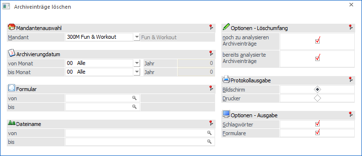
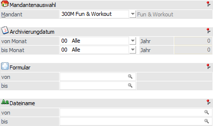
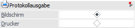
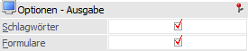
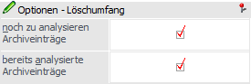

Durch Archivierung können in relativ kurzer Zeit relativ große Datenmengen zusammenkommen. Um diese Datenmengen zu reduzieren, kann altes bzw. nicht mehr benötigtes Archivmaterial gelöscht werden. Dieser Löschvorgang kann im Programmpunkt…
1 WinLine ADMIN
1 Archiv
1 Archiveinträge löschen
... vorgenommen werden.

Selektion

Die folgenden Felder dienen der Selektion der zu löschenden Einträge.
Ø Mandant
An dieser Stelle erfolgt die Auswahl des Mandanten, dessen Archiveinträge gelöscht werden sollen.
Ø Archivierungsdatum von / bis
Hier erfolgt die Eingrenzung aufgrund der Periode der Archivierung, wobei diese aus einer Auswahlliste gewählt werden kann. Sobald ein Monat hinterlegt wurde, kann auch das Jahr in Form "JJ" eingegeben werden.
Ø Formular von / bis
Eingrenzung auf bestimmte Formulare, die gelöscht werden sollen.
Ø Dateiname von / bis
Hier kann eine Selektion aufgrund der Dateinamens (z.B. alle Formulare der Mahnung oder als Kalkulationen) erfolgen.
Protokollausgabe

Ø Bildschirm/Drucker
An dieser Stelle kann definiert werden, ob die Vorschau und das Löschprotokoll am Bildschirm oder auf den Drucker ausgegeben werden soll.
Optionen - Ausgabe

Ø Schlagwörter / Formular
Hier kann der Umfang der Vorschau und des Löschprotokolls eingestellt werden. Entweder werden nur die Bezeichnungen der Formulare angezeigt oder es werden auch die in den gelöschten Formularen verwendeten Schlüsselwörter angedruckt. Wird keine der beiden Checkboxen aktiviert, so wird auch kein Protokoll gedruckt.
Optionen - Löschumfang

Ø noch zu analysierende Archiveinträge
Wird diese Checkbox aktiviert, werden auch die Formulare, die noch nicht analysiert wurden, gelöscht bzw. ausgewertet.
Ø bereits analysierte Archiveinträge
Wird diese Checkbox aktiviert, werden bereits ins Archiv komprimierte Formulare gelöscht.
Buttons
Ø Vorschau
Durch Drücken des Buttons "Vorschau" bzw. der Taste F5 wird auf Basis der Selektion ein Protokoll ausgegeben.
Ø Ende
Mit dem Button "Ende" bzw. der ESC-Taste wird das Fenster geschlossen und keine Löschung durchgeführt.
Ø Löschen
Durch Anwahl den Buttons "Löschen" werden die Einträge gemäß der getroffenen Selektion gelöscht.